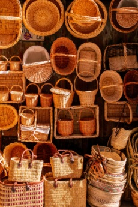

Our Story
Why "Le Panier"?
In 2013, after years of working in kitchens and tending to plants, Emma Dubois opened Le Panier in the heart of Davis Square city. She chose the name Le Panier - meaning "the basket" in French - as a symbol of nourishment, simplicity, and care. It's a simple object, but one that brings people together, and that was Emma's goal: to create a place where food and nature could meet.
A Journey from Garden to Oven
Emma's love for both plants and baking grew over the years. Her passion for gardening started when she moved into a small apartment just above today's store and began cultivating herbs and flowers. She quickly realized that nurturing plants brought her a sense of calm and fulfillment. Around the same time, she began experimenting with baking, particularly sourdough bread. Baking, like gardening, required patience and care. It wasn't just about the end result, but about the process of creating something by hand. It wasn't long before Emma saw how these two passions - baking and plants - could come together in a meaningful way. In her kitchen, surrounded by freshly baked loaves and beautiful flowers, the idea of Le Panier was born.
Opening Le Panier
In 2013, Emma took the leap and opened the doors of Le Panier. Her vision was simple: to offer the community a space where people could enjoy hand-crafted pastries and hand-picked flowers, a place where the care and attention she put into each loaf of bread and each plant could be shared. The name Le Panier was a reminder of everything Emma valued - the patience of tending to something from start to finish, the reward of creating something beautiful, and the joy of sharing it with others. The store quickly became a reflection of Emma's belief that food and nature have the power to bring people together and offer moments of peace and connection in a fast-paced world.